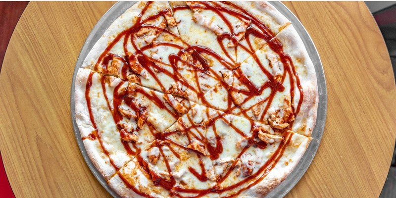

Slices Pizza by Tony
Location: Tate street.
Hours: M-F 10:30AM - 10:00PM, Sat: 11:00am - 10:00PM, Sun: Closed
Find slices right in the heart of Tate St. Don't let it's "hole in the wall" appearnce fool you,
this place is truely somthing special. While I show off the full sized pizzas here, you can also
enjoy just a single slice of any pizza if your in the mood for something lighter. It's one of
this places' best features!
A great way to start your meal at slices is with the garlic knots. This
bready
appitizer comes in 3 sizes, 1 piece, 6 pieces, and 12 pieces with prices 1.99, 5.99, and 8.99
respctivley.
Perfect for for a party of one or many.

The first phenomenal Pizza I reccomend is the BBQ Chicken Pizza. This slice
of heaven
is made up of Mozzarella cheese, grilled chicken breast, and BBQ sauce. A true mix-up to the
pizza formula,
but a welcome one. You can get this pizza in 3 sizes, small 10" for 15.99, Medium 14" for 19.99,
and Large 16"
for 24.99.
Another great choice is the Sicilian Meat Lovers pizza. This pizza is made up
of
Mozzarella cheese, parmigiano cheese, pepperoni, sausage, Italian bacon, ham, hamburger, and
oregano.
It truly loves up to it's name, perfect for any meat lover. You can get this square 16" pizza
for $28.98.
Photos from https://www.slicespizzabytonymenu.com/
Panda Express
Location: Bottom floor of fountain view
Hours: mon-thurs 11am-9pm, fri: 11am-7pm, sun: 4pm-9pm
Right here on campus you can find my personal favorite fast food resturaunt in all it's glory.
It's not beloved by all, but I hold a serious sense of nostalgia for this place. I use to only get
panda at
a mall by my moms work on special occasions when I was a child. Once that mall closed over 10 years
ago my oppertunities
to enjoy it became less frequent(and they were already very infrequent). Now with the convenience of
having it right on
cammpus its quickly become my favorite spot to grab a bite.
Panda Express’s fried rice is a delicious, flavorful side dish that combines
perfectly seasoned
rice with a blend of peas, carrots, and scrambled eggs. It's highly recommended for its
comforting taste, quick convenience, and the way it always hits the spot!

Panda Express’s orange chicken is a crispy, tangy-sweet masterpiece that
bursts with bold
citrus flavor in every bite. The golden chicken is coated in a sticky, zesty sauce with just the
right amount
of sweetness and a hint of spice. It’s a fan-favorite for a reason, and it's my personal
favorite item on the menu.
Panda Express’s honey walnut shrimp is a delightful mix of crispy shrimp
coated in a
sweet honey glaze and topped with crunchy caramelized walnuts. The perfect balance of sweet and
savory,
with a hint of nuttiness, makes each bite a treat for your taste buds. It’s a must-try, and a
very close second
to the classic orange chicken!
Photo's curiosity of the panda express website https://www.pandaexpress.com/
Chick-fil-A
Location: bottom floor of the euc
Hours: mon-thurs: 730am-10pm, fri:730am-8pm, sat: 1030am-6pm
What can I say about this classic chicken resturaunt. They invented the chicken sandwhich, and perfected it
on their very first attempt! If your looking for a good chicken sandwhich on campus, this is the place.
Everyones go to. There also happens to be mutiple Chick-fil-A’s in close proximity too incase this one
doesnt have exactly what you're looking for. But remeber, their closed on sundays!
Chick-fil-A’s waffle fries are crispy, golden, and perfectly seasoned, offering
the ultimate
satisfying crunch in every bite. They’re highly recommended for their addictive flavor, generous
portions,
and how they’re the perfect side to any Chick-fil-A meal!
The honey pepper pimento chicken sandwhich. To put it plain and simple, this is
the best chicken sandwhich I have ever eaten. It's
a limited time item, go get it, now!
Chick-fil-A’s tenders are juicy, hand-breaded perfection, with a crispy exterior
and tender,
flavorful chicken inside. Each bite is seasoned to perfection, making them an irresistible treat
whether you
dip them or enjoy them on their own. I will judge you if you don't use sauce, get the polynesian
sauce, it's great.
Photo's curiosity of the chich-fil-a website https://www.Chick-fil-a.com/